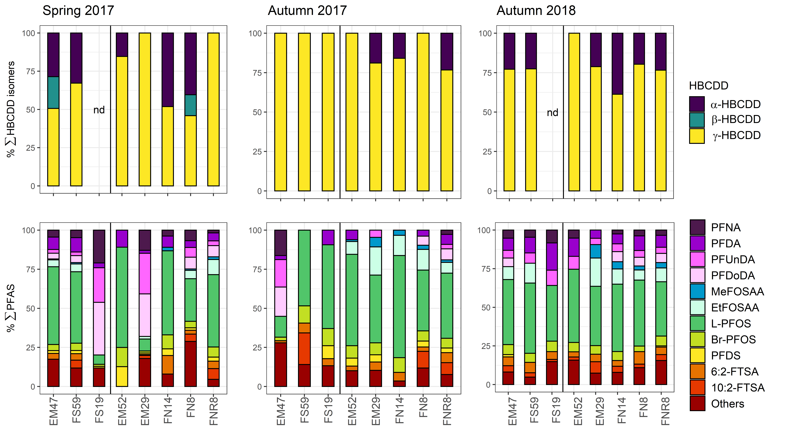

Langage R
De trèèèèèès loin, c'est le langage R (sous Rstudio) que je connais le mieux car c’est ce que j’ai utilisé à l'Université et ce que j'ai ensuite utilisé
en thèse et en post-doc, sauf dans le cas où les outils dont j'avais besoin n'existaient que dans d'autres langages (comme les algorithmes d'estimation des
packages développés sous Matlab par la communauté DEB https://add-my-pet.github.io/DEBtool_M/docs/index.html).
Je connais et j'ai déjà pratiqué la grande majorité des points aux programmes des 3 niveaux de formation proposées par ThinkR
MAIS à des niveaux d'approfondissement très variables selon les items, et pour certains je ne les ai pas utilisés depuis plus de 10 ans (comme le SIG).
J'ai plutôt été autodidacte en formation R depuis mon départ de Lyon 1. J'avais des objets (données, modèles) et des objectifs (analyse de données,
représentations graphiques, estimation de paramètres, simulations complexes et parfois nombreuses pour pouvoir faire des analyses de sensibilités, ...).
J'ai donc construit mes programmes seule et j'avoue que vu le timing et les multiples changements de méthodes et d'objectifs
ça n'a pas toujours été très organisé, propre ou optimisé... ^^ Mais ce côté autodidacte a tout de même eu l'avantage de m'apprendre à chercher
les packages et fonctions pour arriver √† mes fins et √† d√©buguer mes codes comme une grande ! üòä
Je sais
manipuler des données
 de différents types (nombres, dates, chaînes de caractères) : importation/exportation,
exploration (filtrer, trier, agréger, transformer, …)
de différents types (nombres, dates, chaînes de caractères) : importation/exportation,
exploration (filtrer, trier, agréger, transformer, …)
Je sais
décrire et visualiser ces données

: je plot pour explorer rapidement mais je ggplot parce que c’est
quand même plus pratique pour les représentations complexes, et plus joli !
Je sais
créer et organiser des projets R
 sous Rstudio, créer des fonctions personnalisées pour automatiser des analyses,
exporter des rapports automatiquement avec Rmarkdown.
sous Rstudio, créer des fonctions personnalisées pour automatiser des analyses,
exporter des rapports automatiquement avec Rmarkdown.
Je ne dois pas être loin de pouvoir publier sous forme de package les programmes que j'ai créés durant ma thèse et mon post-doc
mais n'en ayant pas eu l'utilité je n'ai jamais sauté le pas.
Autres langages
J'ai beaucoup utilisé LaTeX (dont
Beamer
) dans le cadre de mon stage de M2 car
Sandrine Charles
Mon encadrante de stage de Master 2 au LBBE, Université Lyon 1
m'a appris que c'est en code qu'on apprend à coder, alors j'ai écrit tout mon rapport de M2 sous LaTeX.
Mais une fois arrivée en thèse on m’a demandé de repasser sous Word pour faciliter les relectures et corrections. Et depuis je n'ai jamais repris.
J’ai aussi utilisé Matlab dans le cadre de ma thèse afin d'utiliser un programme d’estimation de paramètres pour mon modèle DEB.
Mon utilisation s'est globalement bornée à créer des tableaux de données et à faire du copier-coller des lignes de code dont j'avais besoin à partir des routines d'estimation d'autres modèles.
Pour le plaisir je m'amuse à faire du HTML comme vous l'avez constaté !
J’ai également des notions de base en SQL mais comme je n’ai pas eu à travailler avec mes connaissances sont « poussiéreuses ».
Shiny
Dès mon stage de M2 au LBBE à Lyon 1 je me suis amusée à créer une appli pour représenter graphiquement la sensibilité des sorties de mon modèle DEB sous R aux modifications dans les valeurs de paramètres. C’était plus un outil pédagogique pour présenter la théorie DEB et mon modèle dans l’équipe qui m’accueillait. Après un looong passage à vide, j’ai remis le nez dedans en 2020 pour créer une appli capable de sélectionner des recettes de cuisine selon différents critères parmi une base de données de recettes que je me suis créée. N'importe quelle occasion est bonne pour me remettre dedans ! ^^
Git & GitHub
Je n’ai sauté le pas qu’il y a peu… Excel étant le seul outil utilisé par la majorité de mes encadrants j’ai toujours été la seule sur les projets à coder.
Alors oui, j’ai souffert pour l’exportation des 15 tableaux de données par feuille Excel, 100 feuilles par fichier Excel et 10 fichiers Excel,
mais il était hors de question de lâcher R !
J’ai simplement hébergé mes projets R sur GitHub : le programme du modèle de ma thèse avec toutes ses applications, et le programme d’analyse
de données, de représentations graphiques, et de modélisation de l’ensemble du projet CHOPIN que je gérais dans le cadre de mon post-doc.
Ça me permettait de pouvoir plus facilement sauvegarder mon travail et de le restituer, même si personne d’autre ne sait actuellement
s’en servir j’ai bon espoir pour l’avenir ! Et récemment j’ai utilisé GitHub et GitPages pour
créer le site web de ma micro-entreprise .
Pédagogie
Depuis toute petite j'aime reformuler les concepts avec mes mots, souvent utiliser des métaphores, des images, pour mieux les visualiser.
Ca m'aide à comprendre et mieux retenir, et visiblement c'est aussi une méthode efficace pour transmettre.
Je crois que ceux qui ont pu bénéficier de mon encadrement ou de mon aide sont les mieux placés pour vous parler
de mes atouts en la matière : vous pouvez contacter Maud Vildier dont j’ai
encadré le stage de M1 durant mon post-doc (pendant le 1er confinement donc 100% en visio !)
et Pierre Bourdaud que j’ai formé très récemment en théorie DEB pour
son post-doc (également en visio).
Entraide et travail d'équipe
Le travail d'équipe c'est fondamental pour s'ouvrir et penser différemment. Recevoir de l'aide et du soutien c'est bien mais en donner aussi !
C'est pour cela qu'aujourd'hui je me porte volontaire pour continuer à faire bénéficier mes anciens collègues et leurs étudiants des connaissances
que j'ai acquises, et à les transmettre pour qu'ils gagnent en autonomie, malgré le côté "officieux" de ce travail actuellement.
Je me suis notamment impliquée dans les travaux de
Jérémy Lobry et
Géraldine Lassalle dans le cadre des travaux de Pierre Bourdaud (post doctorant),
Pierre Labadie avec Marine Gallien (doctorante),
Hélène Budzinski
et Véronique Loizeau avec Adriana Sardi (post-doctorante),
Et comme le travail d'équipe est toujours meilleur quand on se connait mieux et qu'on s'entend bien, par le passé je me suis impliquée
dans l'association locale pour l'organisation d'activités sociales, culturelles et sportives du personnel du site de Cestas de l'Irstea/INRAE
où je travaillais.
Loisirs
-
Musique : tout ce que je fais se fait en musique ! très éclectique, il y a un style musical pour chaque activité : le classique pour se concentrer, le métal pour se défouler, l'électro et le latino pour danser et la pop pour les karaokés !
-
Cinéma, séries : aïe aïe aïe... la liste est trop longue !
-
Livres : les classiques de polars SF et de fantaisy, mais depuis 2 ans je me suis lancée dans un projet fou de diversification de ma culture classique en commençant doucement par tous les Sherlock Holmes de Conan Doyle, puis tous les romans de Jules Vernes entrecoupés de Zola et Stendhal
-
Cuisine : le gras c'est la vie ! mais quand on passe beaucoup de temps à la maison on peut se permettre de l'agrémenter :)
|
-
Bricolage : je répare et/ou rénove des meubles jusqu'aux murs parce que chez moi rien ne se perd, rien ne se crée, mais tout se transforme ! (c) A. Lavoisier
-
Yoga : un bon enchaînement de salutations au soleil plusieurs fois par semaine ça dérouille mes articulations qui s'ankylosent sans cela (je m'inscris donc volontier pour les cours du vendredi avec Colin)
-
Jardinage et promenades : un bon moyen pour moi de me vider la tête et d'assouvir mon besoin de retourner à la terre. mais comme je suis frileuse et qu'il pleut beaucoup à Bordeaux ce n'est pas toujours évident de rester constante
|